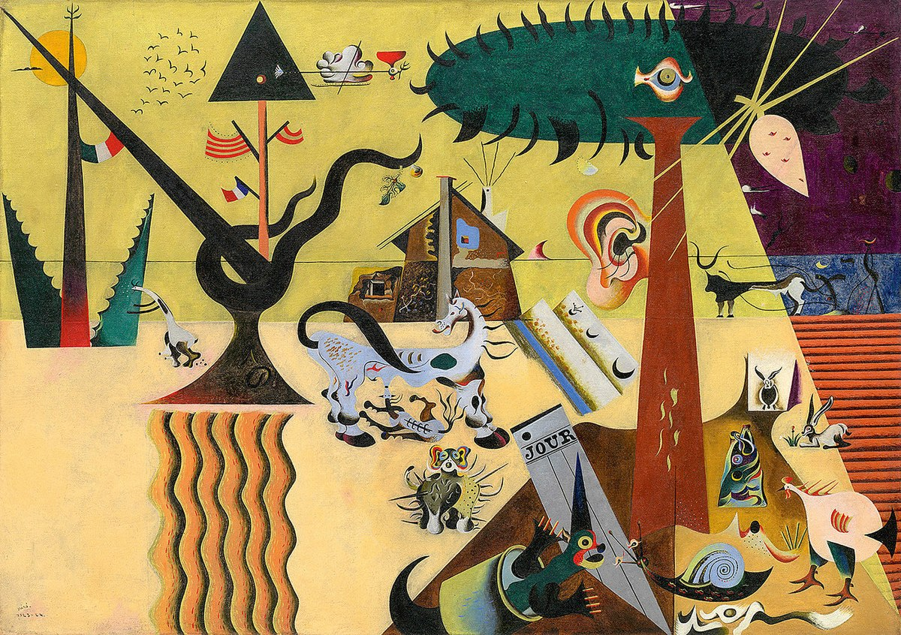
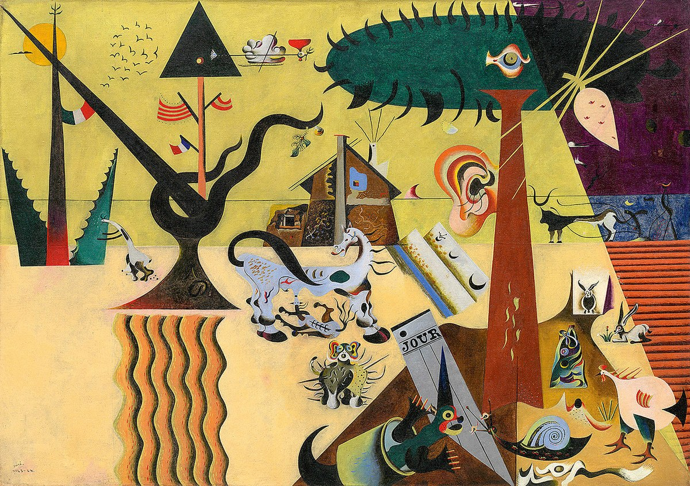

Joan Miró
Joan Miró i Ferrà (1893-1983) fue un pintor, escultor, grabador y ceramista español que se vinculó al surrealismo con un lenguaje propio, abstracto y lleno de formas orgánicas y colores intensos. Nació en Barcelona en 1893, en un entorno familiar vinculado al arte y la artesanía. Para Joan Miró el subconsciente era un enorme campo de juegos, o un juguete muy parecido a los que tuvo en su infancia. Mientras estaba en París, Joan Miró se introdujo en el surrealismo. Aunque nunca se unió su círculo, colaboró y se relaciono con los principales surrealistas. Su obra se fue volviendo cada vez más abstracta, más simple, más infantil. Redujo su paleta a colores primarios, a formas primarias, y esto se ve también en sus esculturas y cerámicas. Entre sus creaciones más representativas figuran El carnaval de Arlequín (1924-25), Mujer y pájaro en la noche (1945) y la escultura monumental Mujer y pájaro (1983), donde plasmó su universo lúdico y abstracto. El período final de la obra por la que Joan Miró es más conocido se remonta a finales de la década de 1960, y se extendería hasta su muerte en 1983, marcando el final de su carrera artística. En 1976, se inauguró el Centro de Arte Contemporáneo Fundación Joan Miró en Barcelona.
"Más importante que una obra de arte es el acto de crearlo."
Galería de Obras
 
